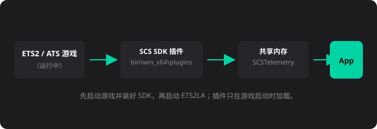
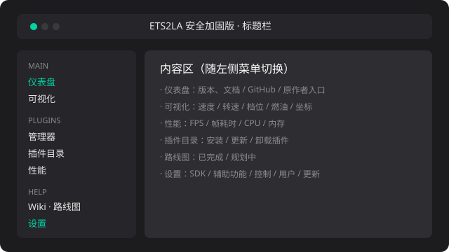
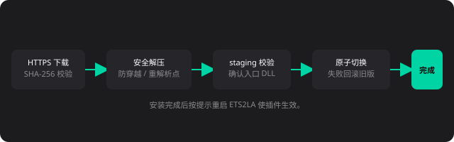

TUTORIAL
ETS2LA Hardened CN 完整使用教程
从下载、连接游戏、安装插件到开启驾驶辅助，一步步带你跑起来。界面默认中文，也支持一键切换英文。
1. 下载与启动
最新版本在 GitHub Releases：
下载地址
https://github.com/motao123/ETS2LA-Hardened-CN/releases- 下载方式二选一：安装器（
ETS2LA-win-release-Setup.exe或.msi，装完支持应用内自动更新）或 便携版（ETS2LA-Hardened-CN-windows-x64-v*.zip，解压即用）。 - 安装器：运行安装向导即可；便携版：解压后双击
ETS2LA.exe（self-contained，无需装 .NET）。 - 如需校验完整性，可用 Release 里的
SHA256SUMS-*.txt比对下载包哈希。
2. 连接游戏（安装 SCS SDK 插件）
程序要读到游戏数据，必须让游戏加载 ETS2LA 的 SDK 插件。
- 先确认游戏是 Steam 正版 ETS2 或 ATS，并且已正常启动过一次。
- 打开 ETS2LA，进入「设置 → SDK」。
- 看到检测到的游戏列表后，点击对应游戏的卡片即可安装 SDK（会把
ets2la_plugin.dll、scs-telemetry.dll、scs_sdk_controller.dll复制到游戏bin\win_x64\plugins）。 - 完全退出游戏再重新启动（插件只在游戏启动那一刻加载，不重启不会生效）。
- 重启后进入一个存档，打开「可视化」页面看到「已连接」即成功。

排查如果仍显示「无法连接到游戏」，确认三点：游戏运行中、SDK 已装到
bin\win_x64\plugins、游戏是在安装 SDK 之后启动的（先装后开）。3. 界面与语言
- 仪表盘：版本信息、文档/GitHub 链接、原作者项目入口。
- 插件目录：浏览并安装/更新/卸载插件。
- 插件管理器：查看已加载插件、打开插件目录、重载/卸载。
- 可视化：实时显示速度、转速、档位、油门/刹车/转向、燃油、转向灯、货物与坐标。
- 性能：实时 FPS、单帧耗时、CPU 使用率、内存、游戏连接/暂停状态。
- 路线图：已完成与规划中的里程碑、GitHub 入口。

切换语言：进入「设置 → 用户 → 界面语言」，选「中文」或「English」，主界面、设置、插件页、覆盖层和教程会立即切换。
4. 安装驾驶插件
自动驾驶依赖插件（核心算法在插件里）。推荐安装：
- 进入「插件目录」。
- 点击「Lane Assist（车道辅助）」「Adaptive Cruise Control（自适应巡航）」「Pathfinding（路径规划）」等卡片进行安装；依赖（如 PathLib、PIDLib）会自动一起装。
- 安装完成后按提示重启 ETS2LA。
- 插件目录中的插件来自官方 API；本项目对下载做了 HTTPS + SHA-256 + 解压安全检查。

5. 驾驶辅助设置
进入「设置 → 辅助功能」，常用项：
- 分离巡航与转向：单击触发巡航、双击同时启用两者。
- SET 行为 / 速度控制步长：设定巡航速度、吸附到最近 10 单位。
- 转向响应 / 加速响应：调节变道和加减速的反应快慢。
- 跟车距离：自适应巡航与前车保持的距离。
- 碰撞规避 / 限速警告 / 最高速度：安全边界。
「设置 → 数据」里的「强制加载地图」「强制基础地图名称」主要用于 RusMap 等地图 mod 无法正确加载时开启。
6. 覆盖层与游戏内交互
运行游戏后，桌面上会出现一个覆盖层（ImGui）。
- 按住 右 Alt（默认交互键，可在「设置 → 控制」修改）进入交互模式。
- 交互模式显示各覆盖层窗口开关（交互模式、性能叠加层、控制台、叠加层信息、状态信息、视觉摄像头）。
- 点击窗口项可开关对应窗口，悬停显示提示。
- 退出交互模式后恢复正常驾驶视角。
提示覆盖层窗口标题和教程文字现在会跟随主界面的中英文切换。
7. 控制与按键绑定
进入「设置 → 控制」查看所有控制项（ASSIST、SET/OK、Next/Cancel、增减等）。
- 点击卡片进入绑定状态，按下键盘键、手柄按钮或移动轴来绑定。
- 右键「普通轴」可修改轴类型（居中/反向/拆分正负）。
- 游戏里同样需要在游戏设置中启用 ETS2LA 的控制（部分辅助功能依赖游戏按键）。
8. 可视化 / 性能 / 路线图
- 可视化：连接游戏后实时刷新速度（km/h）、发动机转速、档位、燃油、转向灯等，适合查看车辆状态。
- 性能：看 FPS、CPU、内存，判断是否撞墙/降频。
- 路线图：查看项目已完成与规划中的功能，以及 GitHub / 原作者项目入口。
9. 连接与更新排查
- 显示无法连接游戏：先开游戏、装好 SDK、完全重启游戏（见第 2 节）。
- 检查更新不工作：便携版不支持应用内自动更新（Velopack 需安装版）；到 GitHub Releases 手动下载新版本替换即可。
- 插件装不上：确认有网络、能访问
api.ets2la.com，且目录能正常刷新出插件。
10. 注意事项与免责声明（参考官方文档）
- 仅支持 Steam 正版 ETS2/ATS；请使用原版 Windows，避免第三方修改版系统。
- 安装/使用时，请关闭虚拟网卡、虚拟局域网类软件，避免影响运行。
- TrucksBook 会因使用 ETS2LA 而封禁账号——如使用 TrucksBook 请卸载 ETS2LA。
- TruckersMP 可用，但由此产生的碰撞后果自负。
- 项目免费开源，倒卖或收费帮装安装包可能被屏蔽/封 IP。
- 本项目不会分发游戏资源、用户存档、SDK/插件之外的第三方二进制；实际驾驶需自行确认符合游戏规则与当地规定。
11. 常见问题
启动报错「无法连接游戏」连接参考第 2 节，重点是“先装 SDK、再完全重启游戏”。
覆盖层中文乱码字体本版本已内嵌 CJK 字体回退（Noto Sans SC），请更新到最新版。
路径规划在东欧/巴尔干 DLC 报错已修复v0.1.0 起已修复 prefab 缓存空引用，升级即可。